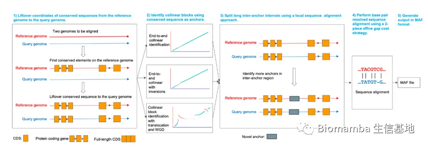
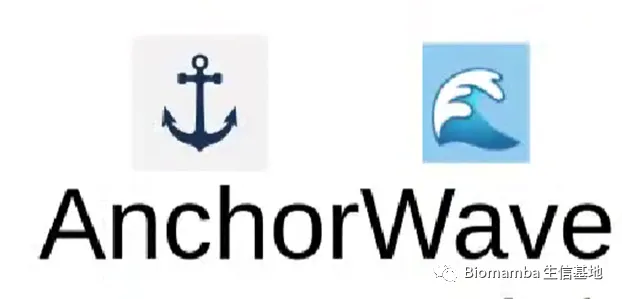

全基因组比对神器：anchorwave
原文：https://mp.weixin.qq.com/s?__biz=MzAwMzIzOTk5OQ==&mid=2247491193&idx=1&sn=2b119c1dcbea5b4e7f22bff2fbf4611b&chksm=9b3f6729ac48ee3fc22c55f7110c93bbceefba1542fa9bc645667832be746671da6d967275b9#rd 合集：文献速递

这是一篇粉丝来稿，向我介绍了一下他们课题组开发的工具:anchorwave ，虽然说这篇文章的影响因子达到12.8 ，但显然《PNAS》的意义不能仅通过影响因子来衡量，大家可以看一下百度百科，便会理解:https://baike.baidu.com/item/%E7%BE%8E%E5%9B%BD%E7%A7%91%E5%AD%A6%E9%99%A2%E9%99%A2%E6%8A%A5/15600648?fromtitle=PNAS&fromid=5414643&fr=aladdin简单来说anchorwave 在全基因组比对方面具有准确率以及敏感性方面的优势，与强大的功能形成反差的是使用方式非常简单(功能/可用性通常是衡量一个生信软件是否优秀的重要指标)，感兴趣的同学可以跟着下面的教程试一试。
随着测序技术的不断发展，越来越多的复杂基因组不断被测序，然而，目前主流的工具无法对复杂基因组进行准确且高敏感性的全基因组比对， 2021年12月PNAS发表了一款名为anchorwave的全基因比对工具，通过分别对人与大猩猩，斑马鱼与金鱼，玉米与高粱，拟南芥不同品种，玉米的不同品种等进行全基因组比对测试，结果表明anchorwave能够同时识别短的和长的插入缺失变异，全基因加倍事件等，因而anchorwave具有较好的准确性；anchorwave能够全面地覆盖全基因组而其他主流工具不行，因而 anchorwave具有最高的敏感性。AnchorWave它使用蛋白编码基因等保守序列作为锚定位点，设计了一个最长路径算法分析两个基因组的共线性区域。使用目前最快的全局序列比对算法WFA设计了一个2-piece affine gap cost的比对策略，并通过WFA算法对每个锚定位点区和锚定位点间区进行单碱基分辨率的序列比对，进而获得每个共线性区域的序列比对和全基因组水平的序列比对。下文以斑马鱼与金鱼为例进行全基因组比对分析。

原理介绍
● 1.在参考基因组上识别并提取所有保守序例如（外显子或蛋白编码基因）作为锚点，之后分别比对到参考基因组和查询基因组上。
● 2.利用第一得到的信息进行格式转化并作图判断是否存在染色体上倒位，易位和全基因组加倍事件的存在，如果知道变异类型此步骤可以省略，以便选择不同的命令genoAli或proali。
● 3.对于比较长的锚点间区，我们通过局部比对的算法识别新的锚点。
● 4.我们使用WFA算法与2-piece affine gap cost strategy进行全基因组比对并输出MAF格式的文件。
软件安装
-
-
-
-
-
-
-
-
- *
-
-
-
-
-
-
-
#源代码安装git clone https://github.com/baoxingsong/anchorwave.gitcd anchorwavecmake ./make#conda安装anchorwaveconda install -c bioconda -c conda-forge anchorwave#docker安装anchorwavedocker build -f docker/Dockerfile -t anchorwave ./docker run -it anchorwave anchorwave
全基因组复制
● 1、下载参考基因组的fasta及注释gff文件和查询基因组的fasta文件
-
-
- *
-
wget ftp://ftp.ensembl.org/pub/release-102/fasta/danio_rerio/dna/Danio_rerio.GRCz11.dna.primary_assembly.fa.gzwget ftp://ftp.ensembl.org/pub/release-102/gff3/danio_rerio/Danio_rerio.GRCz11.102.chr.gff3.gzwget https://research.nhgri.nih.gov/goldfish/download/carAur01.sm.fagunzip *gz
● 2.查看基因组间的共线性和全基因组复制情况
● 2.1使用samtools概览两个基因组
通过使用samtools的faidx命令，我们可以得到fai格式的文件，知道斑马鱼有25条染色体，金鱼有50条常染色体，推测金鱼之间经历了一次全基因组复制，我们还可以通过anchorwave生成共显性区文件进行作图，并且第15923983行是金鱼的最后一条染色体，进行重新命名。
-
- *
samtools faidx carAur01.sm.fasamtools faidx Danio_rerio.GRCz11.dna.primary_assembly.fahead -15923983 carAur01.sm.fa > goldfish.fa
● 2.2提取参考基因组的中的保守序列
这一步需要使用必须使用anchorwave，这样可以过滤一些不必要的anchors，最小化的减少下一步中minimap2的限制。-r代表要输入的参考基因组，-i代表他的注释文件，-o代表他输出的所有的保守序列的文件。
*
anchorwave gff2seq -r Danio_rerio.GRCz11.dna.primary_assembly.fa -i Danio_rerio.GRCz11.102.chr.gff3 -o cds.fa
● 2.3将保守序列（本例中为蛋白质编码序列）分别映射到两个基因组上
-x splice 代表将保守序列映射到基因组，-t 代表线程数，-k 代表kmer， -a代表输出sam格式的文件，-p代表如果它们的比对得分大于初次比对得分的0.4，-N代表最小长度不小于20，还要输入他们的基因组和保守序列。
- *
minimap2 -x splice -t 11 -k 12 -a -p 0.4 -N 20 Danio_rerio.GRCz11.dna.primary_assembly.fa cds.fa > ref.samminimap2 -x splice -t 11 -k 12 -a -p 0.4 -N 20 goldfish.fa cds.fa > carAur.sam
● 3.使用anchorwave进行全基因组比对
proali 代表对有染色体结构变异如易位，染色体融合，全基因组复制的基因组进行比对。-i代表输入参考基因组的注释文件，-r 和-s 参考和查询基因组文件，-a 和-ar映射到两个基因组的结果，-R代表参考基因组覆盖度是2，而查询基因组经历一次全基因组复制事件，所以-Q为1，不写-ns代表产生新的anchor。-t 代表线程为10，-o和-f均为输出的文件。
*
anchorwave proali -i Danio_rerio.GRCz11.102.chr.gff3 -r Danio_rerio.GRCz11.dna.primary_assembly.fa -a carAur.sam -as cds.fa -ar ref.sam -s goldfish.fa -n align1.anchors -o align1.maf -t 10 -R 2 -Q 1 -f align1.f.maf > fishlog1 2>&1
参考文献相关论文：
** **
https://www.pnas.org/doi/10.1073/pnas.2113075119
完整代码：
https://github.com/baoxingsong/anchorwave


如何联系我们
 公众号后台中消息更新不及时，超过48h后便不允许回复读者消息，这里给大家留一下领取资料、咨询服务器的微信号 ，方便大家随时交流、提建议（由助理接待）。此外呼声一直很高的交流群也建好了，欢迎大家入群讨论：永久免费的千人生信、科研交流群
公众号后台中消息更新不及时，超过48h后便不允许回复读者消息，这里给大家留一下领取资料、咨询服务器的微信号 ，方便大家随时交流、提建议（由助理接待）。此外呼声一直很高的交流群也建好了，欢迎大家入群讨论：永久免费的千人生信、科研交流群
大家可以阅读完这几篇之后添加笑一笑也就算了如何搜索公众号过往发布内容